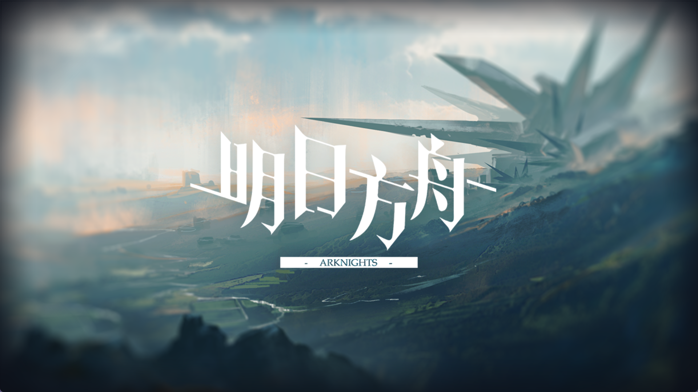
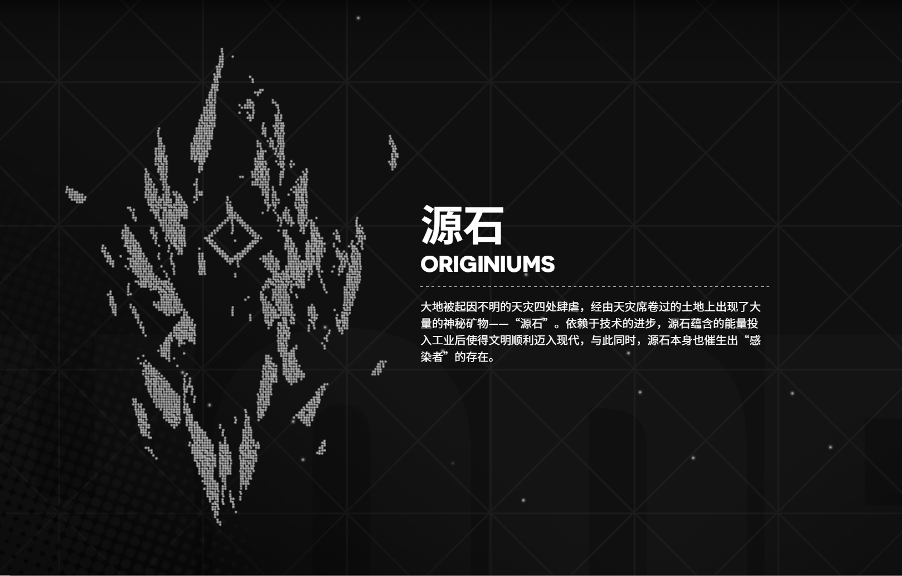
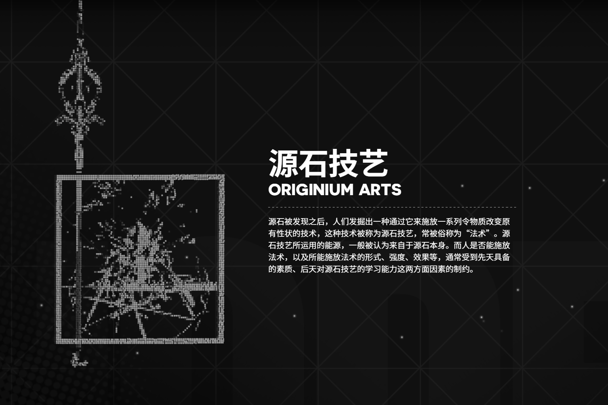
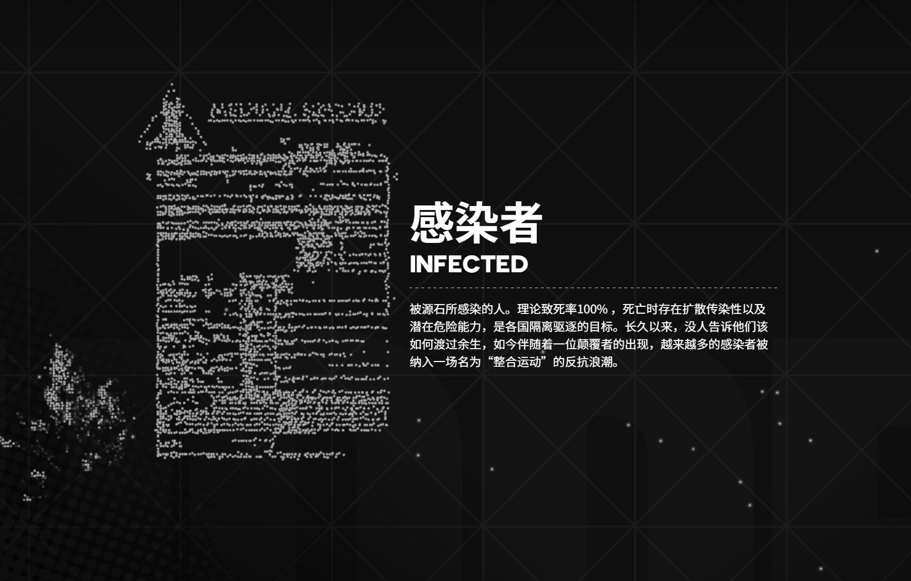
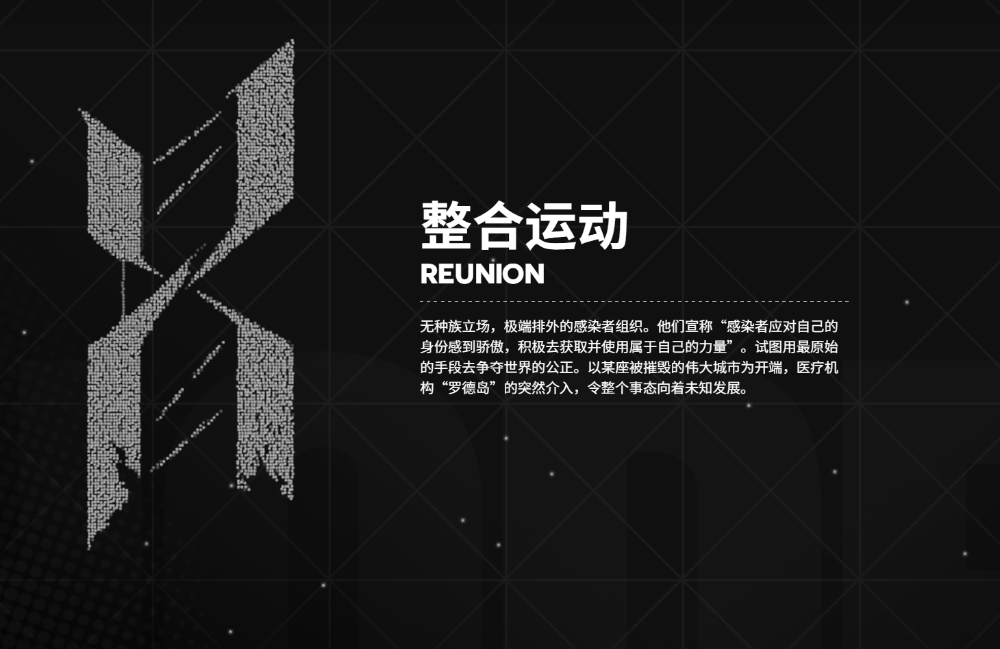
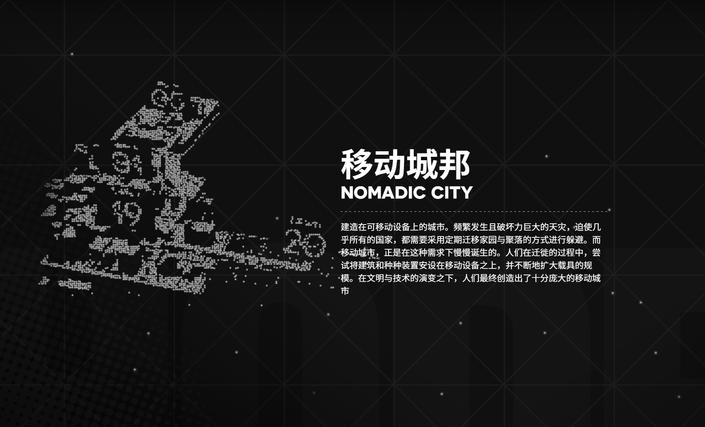
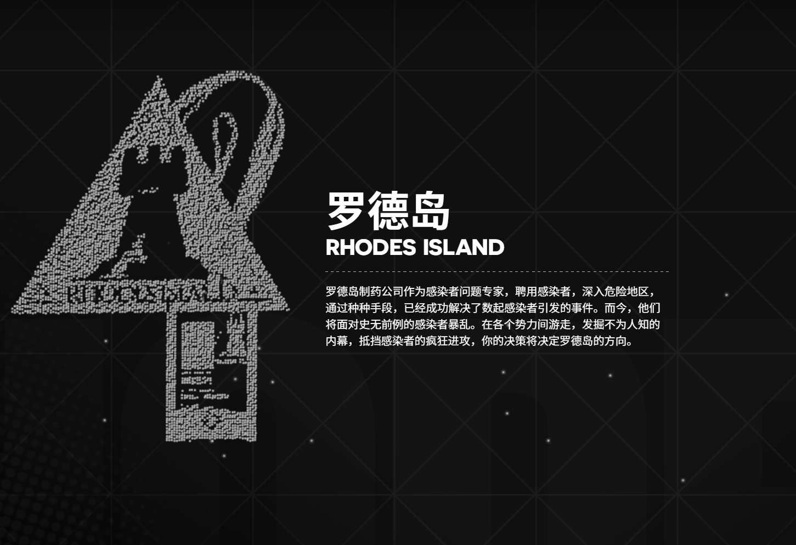

《明日方舟》是由上海鹰角网络科技有限公司自主开发运营的一款策略向即时战略塔防游戏，iOS和Android服务器分别于2019年4月30日和5月1日开启公测，该游戏适龄级别为12+。
在游戏中，玩家将作为罗德岛的领导者“博士”，带领罗德岛的一众干员救助受难人群、处理矿石争端以及对抗诸如整合运动等其他势力。在错综复杂的势力博弈之中，寻找治愈矿石病的方法。
起因不明并四处肆虐的天灾，席卷过的土地上出现了大量的神秘矿物——被人们称为“源石”。虽然源石的发现历史已久，但是依赖于技术的进步，其蕴含的能量使得文明顺利迈入现代，但与此同时，源石本身也催生出“感染者”的存在。
身俱力量与不幸的存在，如今他们中的一部分，妄图与源石整合为一，为大地带来新的秩序。这场战火阴谋是我们对抗天灾遇到的新的阻碍。
你将作为罗德岛的一员，与罗德岛公开领导人阿米娅一同，雇佣人员频繁进入天灾影响后的高危地区，救助受难人群，处理矿石争端，以及对抗整合运动—— “罗德岛”的战术头脑，你准备好了吗？
泰拉世界普遍存在一种矿物，大部分呈黑色半透光晶体。源石都蕴藏着巨大的能量，是引发天灾的首要因素。通常被运用于法术领域，是制造各种施术工具和法术道具的基本材料和催化物，离开了源石辅助，法术的使用效率会大幅下降。现在，随着源石引擎技术的革新，越来越多的源石被各个国家作为能源使用。
源石被发现之后，人们发掘出一种通过它来施放一系列令物质改变原有性状的技术，这种技术被称为源石技艺，常被俗称为“法术”。源石技艺所运用的能源，一般被认为来自于源石本身。而人是否能施放法术，以及所能施放法术的形式、强度、效果等，通常受到先天具备的素质、后天对源石技艺的学习能力这两方面因素的制约。
被源石所感染的人。理论致死率100% ，死亡时存在扩散传染性以及潜在危险能力，是各国隔离驱逐的目标。长久以来，没人告诉他们该如何渡过余生，如今伴随着一位颠覆者的出现，越来越多的感染者被纳入一场名为“整合运动”的反抗浪潮。
起因不明并四处肆虐的天灾，席卷过的土地上出现了大量的神秘矿物——被人们称为“源石”。虽然源石的发现历史已久，但是依赖于技术的进步，其蕴含的能量使得文明顺利迈入现代，但与此同时，源石本身也催生出“感染者”的存在。这些身俱力量与不幸的存在，如今他们中的一部分，妄图与源石整合为一，为大地带来新的秩序。这场战火阴谋使对抗天灾遇到的新的阻碍。
建造在可移动设备上的城市。频繁发生且破坏力巨大的天灾，迫使几乎所有的国家，都需要采用定期迁移家园与聚落的方式进行躲避。而移动城市，正是在这种需求下慢慢诞生的。人们在迁徙的过程中，尝试将建筑和种种装置安设在移动设备之上，并不断地扩大载具的规模。在文明与技术的演变之下，人们最终创造出了十分庞大的移动城市。
罗德岛制药公司是一家注册医药研发公司。罗德岛在公开的资料中声称正在研究可以应用于各个国家、组织或个人遭遇的感染者问题的医疗方案，因此在各国范围内广招贤士，不管资历、无论感染。同时，罗德岛也为其雇员提供良好的医疗与生活条件以及最先进的研究设备，这吸引了许多走投无路的感染者和立志改变感染者处境的有能人士。
